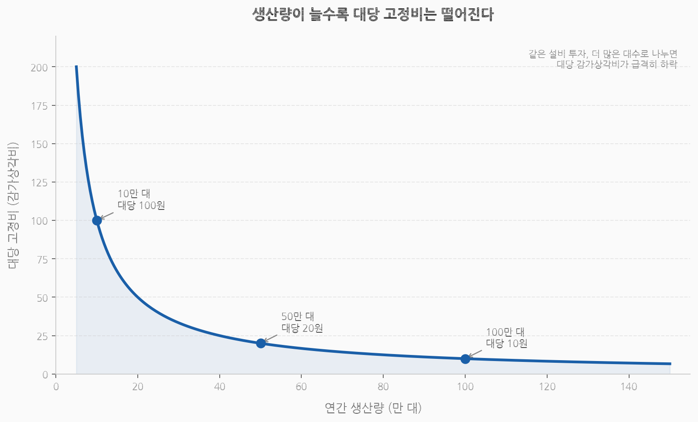

자동차는 어떻게 20세기의 산업이 되었나How the Automobile Became the Industry of the 20th Century
대량생산에서 전자제어까지, 자동차 기술과 제조 시스템의 진화From Mass Production to Electronic Control: The Evolution of Automotive Technology and Manufacturing
말 없는 마차가 세계를 움직이기까지From Horseless Carriage to World Mover
1900년, 자동차는 아직 말보다 낯선 기계였다. 빠르지도, 믿음직하지도 않았다. 도로의 주인공은 여전히 말과 마차였다. 미국 뉴욕에서 말이 하루에 남기는 배설물은 수백 톤에 달했다. 도시는 말의 분뇨로 뒤덮여 신음하고 있었고, 자동차는 그 문제를 해결할 수 있는 기계로 주목받기 시작했다.In 1900, the automobile was still a stranger — less familiar than the horse. It was neither fast nor reliable. Horses and carriages still owned the road. In New York City, horses left behind hundreds of tons of manure every day. The city groaned under a blanket of horse dung, and the automobile began attracting attention as the machine that could solve that problem.
그러나 1920년대 말, 미국 도로 위에는 2,300만 대가 넘는 자동차가 달리고 있었다. 철강, 고무, 석유, 유리, 도로, 보험, 도시 설계까지 — 자동차 한 대가 굴러가기 위해 세상이 통째로 다시 조직됐다. 자동차만큼 많은 산업을 한 제품 안으로 끌어들인 사례는 드물었다.Yet by the late 1920s, more than 23 million cars were rolling on American roads. Steel, rubber, petroleum, glass, roads, insurance, urban planning — the world reorganized itself wholesale so that a single automobile could move. Few products had ever drawn so many industries into their orbit.
자동차는 단순한 이동 수단을 넘어 20세기를 설계한 산업이었다. 어떻게 만드는지가 공장의 역사를 바꿨고, 누가 사는지가 도시의 형태를 바꿨으며, 무엇을 태우는지가 국제 정치를 바꿨다.The automobile was more than a means of transport — it was the industry that designed the 20th century. How it was made changed the history of the factory. Who bought it changed the shape of cities. What it burned changed international politics.
기술의 탄생The Birth of the Technology
가솔린이 이긴 이유, 그리고 자동차가 제품이 되기까지Why Gasoline Won — and How the Car Became a Product
1900년대 초, 미국 도로를 달리는 자동차 중 전기차가 상당한 비중을 차지했다. 나머지는 증기차와 가솔린차가 나눠 가졌다. 셋 중 어느 방식이 살아남을지, 아무도 예상하지 못했다.In the early 1900s, electric vehicles made up a significant share of cars on American roads. The rest was split between steam cars and gasoline cars. No one could predict which of the three would survive.
전기차는 조용하고 조작이 단순했다. 크랭크 없이 시동이 걸렸고, 진동도 적었다. 당시 상류층 도시 여성들 사이에서 전기차는 오히려 선호되는 선택지였다. 냄새도 없고, 기어도 없고, 손을 더럽힐 필요도 없었다. 뉴욕의 의사나 변호사들은 왕진과 출퇴근에 전기차를 썼다. 증기차는 힘이 좋았다. 언덕을 오르거나 무거운 짐을 끄는 데는 내연기관보다 나은 면이 있었다. 가솔린 내연기관은 셋 중 가장 지저분하고, 시동 걸기도 가장 까다로웠다. 크랭크를 손으로 돌려 시동을 거는 과정에서 팔이 부러지는 사고도 드물지 않았다.Electric vehicles were quiet and simple to operate. They started without a crank, and the vibration was minimal. Among upper-class urban women of the era, electric cars were actually the preferred choice — no fumes, no gear changes, no dirty hands required. Doctors and lawyers in New York used electrics for house calls and commuting. Steam cars were powerful; they had an edge over internal combustion engines for climbing hills or hauling heavy loads. The gasoline internal combustion engine was the messiest of the three and the hardest to start. Broken arms from hand-cranking were not uncommon.
그런데 가솔린이 이겼다.And yet gasoline won.
기술 하나 때문이 아니었다. 주유소 망이 깔렸고, 가솔린은 석유 정제의 부산물로 싸게 공급됐다. 당시 미국은 세계 최대 석유 생산국이었고, 스탠더드 오일을 비롯한 정유 회사들이 이미 전국적인 공급망을 갖추고 있었다. 가솔린은 정제 과정에서 남는 찌꺼기 취급을 받던 물질이었다.Not because of any single technology. A network of filling stations spread across the country, and gasoline was supplied cheaply as a byproduct of oil refining. The United States was the world's largest oil producer at the time, and companies like Standard Oil had already established nationwide supply chains. Gasoline was a substance that had been treated as refinery waste.
배터리는 무겁고 충전 인프라가 없었다. 당시 전기차의 1회 충전 주행거리는 약 50~80킬로미터. 도시 안에서는 충분했지만, 도시 밖을 나가는 순간 쓸모가 없었다. 증기차는 물을 끓이는 데 시간이 걸렸다. 겨울에는 더 오래 걸렸다.Batteries were heavy and there was no charging infrastructure. The range of electric vehicles on a single charge was roughly 50–80 km. Adequate within the city, but useless the moment you left it. Steam cars took time to boil water — longer in winter.
1908년 포드 모델 T가 등장하고 이동식 조립라인이 가솔린차 가격을 끌어내리자 경쟁은 끝났다. 기술의 승패는 기술 자체가 결정하지 않는다. 어떤 기술이 더 빠르게 인프라를 확보하고, 더 낮은 가격에 공급될 수 있는가가 결정한다. 전기차가 더 조용하고 더 편했음에도 진 이유가 여기 있다.When the Ford Model T arrived in 1908 and the moving assembly line drove down the price of gasoline cars, the competition was over. It is not the technology itself that decides which wins. What decides is which technology can build infrastructure faster and be supplied at a lower price. This is why the electric vehicle lost, despite being quieter and more convenient.
자동차는 엔진 하나로 완성되지 않는다. 변속기, 섀시, 서스펜션, 조향장치, 브레이크, 타이어, 조명, 지붕까지. 수만 개의 부품이 동시에 맞물려야 달린다. 하나가 빠지면 전체가 멈춘다. 냉장고나 세탁기는 핵심 부품 몇 개가 작동하면 된다. 자동차는 다르다. 이 복잡성이 자동차산업의 진입 장벽이었고, 동시에 이 산업이 그토록 많은 협력 산업을 끌어안게 된 이유다.An automobile is not completed by an engine alone. Transmission, chassis, suspension, steering, brakes, tires, lights, roof — tens of thousands of components must mesh simultaneously for it to move. Remove one, and everything stops. A refrigerator or washing machine only needs a few core parts working. A car is different. This complexity was the entry barrier of the auto industry, and simultaneously the reason this industry came to embrace so many supporting industries.
1912년 크랭크 시동이 전기 모터 시동장치로 대체됐다. 캐딜락이 처음 도입한 이 기술은 자동차를 누구나 혼자 탈 수 있는 물건으로 만들었다. 이전까지는 시동을 걸려면 두 사람이 필요하거나, 상당한 체력이 필요했다. 공압 타이어가 승차감을 바꿨고, 4륜 브레이크가 더 빠른 속도에서도 멈출 수 있게 했다. 밀폐형 차체가 생겨 날씨에 관계없이 탈 수 있게 됐다. 설계가 표준화되고 부품이 호환됐다. 장인의 손으로 한 대씩 만들던 기계가 반복 생산이 가능한 제품으로 바뀌고 있었다.In 1912, the crank start was replaced by an electric motor starter. First introduced by Cadillac, this technology turned the car into something anyone could drive alone. Before that, starting required two people or considerable physical strength. Pneumatic tires transformed ride comfort; four-wheel brakes allowed stopping at higher speeds; enclosed bodies made driving possible in any weather. Designs became standardized and parts interchangeable. The machine once built one at a time by craftsmen was becoming a product capable of repeated mass production.
많이 만들수록 값은 내려간다The More You Make, the Lower the Price
포드가 바꾼 것은 자동차가 아니라 공장이었다What Ford Changed Was Not the Car — It Was the Factory
자동차는 복잡했기 때문에 비쌌다. 차체를 찍어내고, 부품을 맞추고, 도장을 하고, 조립 라인을 유지하려면 거대한 설비가 필요했다. 한 대씩 만드는 방식으로는 가격을 낮출 수 없었다. 대중의 제품이 되려면, 먼저 공장이 달라져야 했다.Cars were expensive because they were complex. Stamping out a body, fitting parts together, applying paint, maintaining an assembly line — all of it required enormous facilities. There was no way to lower the price by making them one at a time. To become a product for the masses, the factory had to change first.
1908년 포드 모델 T의 가격은 850달러였다. 당시 미국 평균 연봉의 절반 수준. 누구나 살 수 있는 물건은 아니었다. 당시 자동차는 여전히 부유층의 취미 용품이었다. 고장이 잦았고, 도로는 열악했으며, 정비할 수 있는 사람도 드물었다.The Ford Model T was priced at $850 in 1908 — roughly half the average annual American wage. It was not something anyone could buy. At that time, cars were still a hobby item for the wealthy. They broke down often, roads were poor, and people who could maintain them were scarce.
원가를 절감하지 않고선 가격을 내릴 수 없었다.Without cutting costs, there was no way to lower the price.
자동차 공장을 짓는 돈은 차를 한 대도 팔기 전에 이미 나간다. 프레스 설비, 용접 장비, 도장 라인, 조립 공간. 가동하든 안 하든 매년 감가상각비가 발생한다. 차가 안 팔려도 공장은 돈을 잡아먹는다. 이 고정비 구조가 자동차산업의 본질을 결정한다.The money to build an automobile factory goes out before a single car is sold. Press equipment, welding machines, paint lines, assembly space — depreciation occurs every year whether the facility runs or not. Even when cars don't sell, the factory keeps consuming money. This fixed-cost structure determines the essence of the auto industry.
감가상각비를 대당 원가로 떨어뜨리는 방법은 하나다. 많이 만드는 것이다. 연간 10만 대와 100만 대를 생산하는 공장이 같은 설비를 쓴다면, 대당 감가비는 10배 차이가 난다. 많이 팔수록 대당 원가가 내려가고, 원가가 내려갈수록 가격을 낮출 수 있고, 가격이 낮아질수록 더 많이 팔린다. 자동차산업이 규모를 향해 달려온 이유다.There is one way to bring depreciation down to per-unit cost: make more. If a factory producing 100,000 units a year uses the same equipment as one producing 1,000,000, the per-unit depreciation differs tenfold. The more you sell, the lower the per-unit cost; the lower the cost, the lower the price you can charge; the lower the price, the more you sell. This is why the auto industry has relentlessly chased scale.

생산량이 늘수록 대당 고정비(감가상각비)는 급격히 하락한다As production volume increases, fixed cost per unit (depreciation) drops sharply
1913년, 미시건 주 하이랜드 파크 공장에 이동식 조립라인이 가동됐다. 차체 골격이 컨베이어를 따라 움직이고, 각 작업자는 자기 자리에서 한 가지 일만 반복했다. 엔진 달기, 핸들 조이기, 바퀴 끼우기. 작업자는 전문가일 필요가 없었다. 이민자도, 영어를 못하는 사람도 하루 만에 배울 수 있는 단순 반복 작업으로 분해됐다. 공장은 사람을 가릴 처지가 아니었다.In 1913, the moving assembly line was set in motion at the Highland Park plant in Michigan. The car body frame moved along a conveyor while each worker repeated a single task at their station: attaching an engine, tightening a steering wheel, fitting wheels. Workers did not need to be specialists. Tasks were broken down into simple, repetitive operations that an immigrant or someone who spoke no English could learn in a day. The factory was in no position to be choosy about people.
조립 시간이 12시간 이상에서 93분으로 줄었다. 하루에 만들 수 있는 대수가 폭발적으로 늘었다. 설비 감가비가 훨씬 많은 대수로 나눠졌다. 5년 뒤 가격은 526달러로, 1920년대에는 290달러까지 내려갔다. 대당 고정비를 혁신적으로 줄이며 이익이 올라갔다.Assembly time dropped from over 12 hours to 93 minutes. The number of cars that could be built per day exploded. Equipment depreciation was spread across far more units. Five years later the price fell to $526, and by the 1920s to $290. Fixed cost per unit was slashed so dramatically that profits rose.
포드는 공장 노동자 임금을 하루 5달러로 올렸다. 당시 업계 평균의 두 배였다. 조립라인 노동은 단조롭고 혹독했다. 이직률이 높았고, 결근도 잦았다. 안정적인 생산 라인을 유지하려면 사람이 남아 있어야만 했다. 그리고 자신의 공장에서 만든 차를 자신의 노동자들이 살 수 있어야 한다는 계산도 있었다. 공급처에서부터 수요를 만들어내겠다는 계산이었다.Ford raised factory wages to five dollars a day — double the industry average at the time. Assembly line work was monotonous and grueling. Turnover was high, absenteeism common. Keeping the production line stable required people to stay. There was also a calculation: the workers making the cars in his factory should be able to afford to buy them. It was a plan to generate demand from the supply side itself.
GM, Toyota, 현대차가 연간 수백만 대를 생산하는 이유는 많이 팔기 위해서만이 아니다. 팔지 않으면 고정비를 감당할 수 없기 때문이다. 자동차산업에서 규모는 선택이 아닌, 생존의 필수 조건이다.The reason GM, Toyota, and Hyundai produce millions of vehicles a year is not only to sell more. It is because without selling at that scale, they cannot cover their fixed costs. In the auto industry, scale is not a choice — it is a survival requirement.
산업의 구조The Structure of the Industry
공급망, 수익 구조, 그리고 생태계Supply Chain, Revenue Structure, and Ecosystem
자동차 한 대는 완성차 회사 혼자 만들지 않는다.A single automobile is not built by the automaker alone.
차체를 이루는 철강, 타이어를 만드는 천연고무, 창유리, 시트를 채우는 석유화학 소재. 엔진 부품, 변속기, 브레이크, 전기장치. 모두 협력사에서 온다. 완성차 회사는 설계하고, 조립하고, 품질을 관리하며, 브랜드를 붙인다. 현대적인 완성차 공장은 차를 '만드는' 곳이 아니라 차를 '조립하는' 곳에 가깝다.The steel forming the body, the natural rubber for tires, the window glass, the petrochemical materials filling the seats. Engine components, transmissions, brakes, electrical systems — all come from suppliers. The automaker designs, assembles, manages quality, and applies the brand. A modern auto factory is less a place that "makes" cars than a place that "assembles" them.
달리려면 도로가 필요하고, 서려면 주유소가 필요하다. 고장 나면 정비소, 살 돈이 없으면 할부금융. 자동차 한 대는 이 전체 생태계가 작동해야 비로소 의미가 생긴다. 자동차가 보급된다는 것은 이 생태계 전체가 함께 커진다는 뜻이었다.To move it needs roads; to stop it needs filling stations. When it breaks down there are repair shops; when there is no money to buy it there is installment financing. A single automobile only gains meaning when this entire ecosystem operates. The spread of the automobile meant the whole ecosystem grew together.
포드는 수직계열화로 이 문제를 풀었다. 철광석, 고무, 유리, 목재, 운송까지 직접 통제했다. 루즈 콤플렉스는 그 상징이었다. 미시건 강변에 자리 잡은 이 거대한 공장 단지는 철광석이 들어오면 완성차가 나가는 구조였다. 부지 면적만 여의도의 두 배가 넘었다. 포드에게 좋은 자동차 회사란 전체 흐름을 통제하는 회사였다. 외부에 의존하는 순간 비용도, 품질도, 납기도 자기 손을 벗어난다고 봤다.Ford solved this through vertical integration, controlling iron ore, rubber, glass, timber, and transportation directly. The River Rouge Complex was the symbol. This massive factory complex on the banks of the Michigan River was structured so that iron ore went in and finished cars came out. The site area alone was more than twice the size of Yeouido. To Ford, a good auto company was one that controlled the entire flow. The moment you depended on the outside, costs, quality, and delivery timelines all slipped from your hands.
그러나 차량이 복잡해질수록 한계가 드러났다. 모든 기술을 내부에서 개발하고 유지하는 비용이 전문 부품사에 맡기는 것보다 훨씬 비쌌다. 브레이크, 전장, 변속기, 전자제어처럼 전문성이 높은 영역이 늘어나면서 전문 부품사와의 분업이 깊어졌다. 완성차 회사와 직접 거래하는 1차 부품사, 그 아래 2차, 3차 협력사로 이어지는 다층 공급망이 형성됐다. 보쉬, 덴소, 컨티넨탈은 브레이크, 변속기, 전자제어 시스템을 통째로 납품한다. 완성차 회사는 이들 없이 차 한 대를 만들 수 없다.But as vehicles grew more complex, the limits emerged. The cost of developing and maintaining all technology in-house was far higher than entrusting it to specialized suppliers. As highly specialized domains like brakes, electrical systems, transmissions, and electronic controls multiplied, the division of labor with dedicated parts companies deepened. A multi-tier supply chain formed: Tier 1 suppliers dealing directly with automakers, below them Tier 2 and Tier 3 partners. Bosch, Denso, and Continental supply entire brake systems, transmissions, and electronic control systems. Automakers cannot build a single car without them.
효율적이지만 치명적으로 취약한 구조다. 공급망의 한 지점이 막히면 전체가 멈춘다. 20세기 후반에 형성된 이 다층 공급망의 취약성은 훗날 부품 하나의 부족이 전 세계 완성차 공장을 동시에 멈추는 사태로 드러난다.Efficient, but fatally fragile. Block one point in the supply chain, and everything stops. The vulnerability of this multi-tier supply chain, formed in the second half of the 20th century, would later be exposed when a shortage of a single component brought auto factories around the world to a simultaneous halt.
수익 구조도 겉보기와 다르다. 완성차 마진은 박하다. 수만 개의 부품, 수천 명의 인력, 수조 원의 설비가 투입된 산업치고는 얇다. 차 한 대를 3,000만 원에 팔아도 실제 영업이익은 그 일부에 불과하다.The revenue structure is also not what it appears. Finished vehicle margins are thin. For an industry deploying tens of thousands of components, thousands of workers, and trillions of won in equipment, the margins are slim. Even selling a car for 30 million won, the actual operating profit is only a fraction of that.
진짜 돈은 다른 곳에서 나온다. 첫째는 금융이다. 할부와 리스로 차를 팔 때 한 번, 그 차를 사는 사람에게 이자로 한 번 더. 현대캐피탈, GM 파이낸셜, 폭스바겐 파이낸셜 서비스 같은 자동차 금융사들은 완성차 그룹 전체 이익에서 상당한 비중을 차지한다. 둘째는 부품과 서비스다. 정비, 부품 교체, 보증 연장. 딜러망을 통한 애프터마켓 수익은 완성차 판매 마진보다 이익률이 높다. 차를 한 번 팔고 끝이 아니라, 그 차가 도로를 달리는 동안 계속해서 수익이 발생하는 구조다. 셋째는 프리미엄 브랜드다. 대중차 브랜드의 적자를 프리미엄 브랜드의 이익으로 메우는 구조는 자동차 그룹이 오래전부터 써온 공식이다.The real money comes from elsewhere. First, finance. Once when selling a car on installments or lease, and again in interest from the buyer. Auto finance companies like Hyundai Capital, GM Financial, and Volkswagen Financial Services account for a substantial share of the entire auto group's profits. Second, parts and service. Maintenance, parts replacement, extended warranties — aftermarket revenue through the dealer network carries higher margins than vehicle sale margins. It is not one sale and done; revenue keeps flowing as long as the car is on the road. Third, premium brands. The formula of covering mass-market brand losses with premium brand profits is one auto groups have long relied upon.
소비의 설계Designing Desire
GM이 자동차에 욕망을 붙인 방법, 그리고 전후 황금기How GM Attached Desire to the Car — and the Postwar Golden Age
포드가 자동차를 싸게 만들었다면, GM은 자동차를 사고 싶게 만들었다.If Ford made the car cheap, GM made the car desirable.
1920년대, 포드 모델 T는 여전히 잘 팔렸다. 싸고 튼튼했다. 그러나 검정색이었고, 해마다 같은 모양이었다. 포드는 소비자가 원하는 건 더 좋은 이동 수단이지 더 예쁜 차가 아니라고 봤다. "어떤 색이든 원하는 색으로 드리겠습니다. 검정이라면."이라는 그의 말은 유명하다.In the 1920s, the Ford Model T was still selling well. It was cheap and sturdy. But it came in black, and it looked the same year after year. Ford believed what consumers wanted was better transportation, not a prettier car. His words are famous: "You can have any color you like, as long as it's black."
GM의 알프레드 슬론은 달랐다.Alfred Sloan of GM thought differently.
슬론은 쉐보레부터 폰티악, 올즈모빌, 뷰익, 캐딜락까지 브랜드 포트폴리오를 쌓았다. 각 브랜드는 가격대가 달랐고, 타깃 고객이 달랐으며, 전달하는 이미지가 달랐다. 쉐보레로 시작해, 돈을 모으면 뷰익으로, 성공하면 캐딜락으로. 자동차가 계층 이동의 시각적 증거가 됐다.Sloan built a brand portfolio from Chevrolet through Pontiac, Oldsmobile, Buick, and Cadillac. Each brand had a different price point, a different target customer, and a different image. Start with a Chevrolet, save up for a Buick, succeed and get a Cadillac. The car became visible proof of social mobility.
GM은 여기서 한 발 더 나갔다. 매년 디자인을 조금씩 바꿨다. 기술적으로 달라진 게 없어도 외형이 바뀌면 소비자는 새것을 원했다. 성능 면에서 아무 문제 없는 차를 두고도 올해 모델이 더 세련돼 보인다는 이유로 교체를 고민하게 됐다. 할부 판매도 생겼다. 지금 돈이 없어도 차를 살 수 있게 되며, 소비는 더욱 늘어났다.GM went one step further. It changed the design slightly every year. Even when nothing had changed technically, an updated exterior made consumers want the new one. People began contemplating a trade-in for a perfectly functioning car simply because this year's model looked more refined. Installment sales arrived too. Being able to buy a car even without money at hand drove consumption even higher.
수요를 끊임없이 만들어내는 구조였다. 공장은 계속 돌아가야 하고, 감가비는 계속 발생한다. 슬론의 브랜드 포트폴리오와 연식 변경은 결국 감가비를 감당하기 위한 수요 창출 장치였다. 1927년 포드는 모델 T 생산을 중단했다. GM에 시장을 빼앗겼기 때문이다. 싼 차를 잘 만드는 것만으로는 부족한 시대가 됐다.It was a structure that continuously manufactured demand. The factory must keep running, and depreciation keeps accumulating. Sloan's brand portfolio and annual model changes were ultimately a demand-generation device to cover depreciation costs. In 1927, Ford halted production of the Model T — because the market had been taken by GM. Making a cheap car well was no longer enough.
전쟁이 공장을 키웠다. 2차 대전 중 포드, GM, 크라이슬러는 민간차 생산을 멈추고 지프, 트럭, 전차, 항공기 엔진을 만들었다. 미국이 연합국에 공급한 군수물자의 상당 부분이 디트로이트에서 나왔다. 4년간의 전쟁이 자동차 공장의 생산 능력을 비약적으로 키웠다. 전쟁이 끝났을 때, 디트로이트는 세계에서 가장 강력한 제조 기반을 갖춘 도시였다.The war expanded the factories. During World War II, Ford, GM, and Chrysler stopped civilian car production and made jeeps, trucks, tanks, and aircraft engines. A substantial portion of the military supplies the United States provided to the Allied forces came from Detroit. Four years of war dramatically expanded the productive capacity of auto factories. When the war ended, Detroit was the city with the most powerful manufacturing base in the world.
전쟁이 끝나자 소비가 폭발했다. 전쟁 중 민간 소비를 억눌렸던 수요가 한꺼번에 터져 나왔다. 1956년 연방지원고속도로법이 통과되며 약 66,000킬로미터의 인터스테이트 하이웨이 건설이 시작됐다. 이것은 단순한 도로 공사가 아니었다. 미국의 지리를 다시 그리는 작업이었다. 교외가 생겨났다. 직장은 도심에, 집은 교외에. 그 사이를 자동차가 채웠다. 교외에 집을 샀다는 건 차를 사야 한다는 뜻이었다. 자동차 수요는 도시 구조 속에 박혀버렸다. 차 없이는 출퇴근이 불가능한 도시가 미국 전역에 만들어졌다.When the war ended, consumption exploded. Demand suppressed during the war in the civilian sector burst out all at once. The Federal Aid Highway Act of 1956 passed, and construction began on roughly 66,000 kilometers of interstate highways. This was not simply road construction — it was redrawing the geography of America. Suburbs emerged. Work in the city center, home in the suburbs. The car filled the space between. Buying a house in the suburbs meant you had to buy a car. Automobile demand became embedded in the structure of cities. Across the United States, cities arose where commuting without a car was impossible.
자동변속기, 파워 스티어링, 에어컨, 라디오. V8 엔진의 묵직한 소리, 크롬으로 덮인 범퍼, 테일핀 디자인. 자동차는 생활 공간이 됐다. 드라이브인 극장, 드라이브스루 식당이 생겨났다. 자동차 없이 갈 수 없는 장소들이 늘어났다. 미국인의 정체성과 자동차는 분리할 수 없게 됐다.Automatic transmission, power steering, air conditioning, radio. The deep rumble of a V8 engine, chrome-covered bumpers, tail-fin design. The car became a living space. Drive-in theaters and drive-through restaurants appeared. Places you couldn't reach without a car multiplied. American identity and the automobile became inseparable.
위기와 전환Crisis and Transformation
오일쇼크, 일본식 생산, 전자제어의 시대Oil Shock, Japanese Production, and the Age of Electronic Control
1970년대, 자동차산업이 처음으로 멈칫했다.In the 1970s, the auto industry hesitated for the first time.
1965년 랠프 네이더가 《어떤 속도에서도 안전하지 않다(Unsafe at Any Speed)》를 출판했다. GM 코르베어의 설계 결함을 포함해 당시 미국 자동차 전반의 안전 문제를 정면으로 고발했다. 책은 베스트셀러가 됐다. GM은 네이더를 사찰하는 것으로 대응했다가 오히려 역풍을 맞았다. 이듬해 미 의회는 자동차 안전법을 통과시켰다. 안전벨트가 의무화됐다. 자동차 회사가 처음으로 외부 규제 앞에 멈춰 선 순간이었다.In 1965, Ralph Nader published Unsafe at Any Speed. It directly indicted the safety problems of American cars in general, including design defects in the GM Corvair. The book became a bestseller. GM responded by surveilling Nader, which only triggered a backlash. The following year Congress passed the National Traffic and Motor Vehicle Safety Act. Seatbelts became mandatory. It was the moment automakers first came to a halt before external regulation.
1970년 청정대기법이 배출가스 기준을 강화했다. 규제가 기술 개발을 강제하기 시작했다. 그리고 1973년 오일쇼크가 왔다. 이집트와 시리아의 이스라엘 공격을 지원한 미국에 대한 보복으로 아랍 산유국들이 석유 수출을 금지했다. 휘발유 가격이 단기간에 4배 가까이 뛰었다. 주유소 앞에 줄이 늘어섰다. 크고 무겁고 기름을 많이 먹는 미국 대형차는 갑자기 짐이 됐다. 그 자리를 일본산 소형차가 파고들었다.The Clean Air Act of 1970 tightened emissions standards. Regulation began forcing technological development. Then the 1973 oil shock arrived. Arab oil-producing nations banned oil exports in retaliation for U.S. support of Israel during the Egyptian and Syrian attack. Gasoline prices nearly quadrupled in a short period. Lines formed outside filling stations. Large, heavy, fuel-hungry American cars suddenly became a burden. Japanese compact cars moved into that space.
더 크고, 더 빠르게. 1970년대 이전 자동차산업의 문법이었다. 규제가 적용됨과 함께 이제 업계는 새로운 문제를 해결해야만 했다. 무엇을 만들 수 있는가가 아니라, 무엇을 만들어도 되는가를 고민하기 시작한 시기였다.Bigger and faster — the grammar of the auto industry before the 1970s. With regulation now in force, the industry had new problems to solve. This was the period when it began asking not "what can we make?" but "what are we allowed to make?"
미국 Big Three가 규제 대응에 허덕이는 동안, Toyota, Honda, Nissan은 준비가 돼 있었다. 방식을 바꿔 빠르게 대응하며 치고 나온 것이다.While the American Big Three were struggling to respond to regulation, Toyota, Honda, and Nissan were ready. They changed their approach and moved fast.
Toyota는 포드의 방식을 배우고 나서 뒤집었다. 전후 일본은 자원도 자본도 부족했다. 포드처럼 대량으로 쌓아두고 파는 방식은 처음부터 불가능했다. 필요한 것만, 필요한 때에. 그 절박함에서 나온 시스템이 도요타 생산 방식이다.Toyota learned from Ford's method, then inverted it. Postwar Japan had neither resources nor capital. The Ford approach of mass-producing and stockpiling inventory was impossible from the start. Only what is needed, only when it is needed. The system that emerged from that desperation is the Toyota Production System.
포드식은 많이 만들고 재고로 쌓는 방식이었다. TPS는 반대였다. 필요한 만큼만, 필요한 때 만든다. 재고는 낭비다. 문제가 생기면 라인을 멈추고 바로 고친다. 적기 납품은 부품이 필요한 시점에 딱 맞춰 들어오는 방식이다. 개선 활동은 현장 작업자가 직접 작업 방식을 고치는 문화다. 불량이 나와도 재고가 없으니 바로 티가 났다. 문제를 숨길 수 없는 구조였다.The Ford way was to make in large quantities and stockpile inventory. TPS was the opposite. Make only as much as needed, only when needed. Inventory is waste. When a problem arises, stop the line and fix it immediately. Just-in-time delivery means parts arrive precisely when they are needed. Kaizen — continuous improvement — is a culture where frontline workers themselves fix the way they work. When a defect appeared, with no inventory to hide behind, it showed immediately. It was a structure where problems could not be concealed.
1990년 MIT 연구진이 발표한 《The Machine That Changed the World》의 결론은 명확했다. Toyota 방식은 절반의 인력·공간·재고로 더 적은 결함을 냈다. 자동차산업 전체가 Toyota에서 다시 배우기 시작했다. 군살 없는 생산 방식이라는 이름으로 전 세계 공장에 퍼졌다.The conclusion of The Machine That Changed the World, published by MIT researchers in 1990, was unambiguous: the Toyota method produced fewer defects with half the workforce, space, and inventory. The entire auto industry began learning from Toyota again. It spread to factories worldwide under the name lean manufacturing.
1980년대부터 차 안에 전자제어가 들어왔다. 전자제어장치가 엔진의 연료 분사량과 점화 시기를 전자적으로 제어했다. 이전까지 기화기가 하던 일을 센서와 소프트웨어가 대신하게 됐다. 더 정밀하고, 더 효율적이며, 배출가스도 줄었다. ABS가 급제동 시 바퀴 잠김을 막았다. 에어백이 충돌 시 수십 분의 1초 안에 전개됐다. CAD/CAM이 설계와 생산을 디지털화했다. 처음에는 고가 차량의 옵션이었다가 표준 사양이 됐다.From the 1980s, electronic control entered the car. Engine Control Units regulated fuel injection quantity and ignition timing electronically. What carburetors had previously done was taken over by sensors and software. More precise, more efficient, lower emissions. ABS prevented wheel lockup during hard braking. Airbags deployed in fractions of a second on impact. CAD/CAM digitized design and production. What began as options on expensive vehicles became standard equipment.
전자제어의 등장은 자동차산업의 경쟁 방식을 바꿨다. 과거의 자동차 기술은 기계적 완성도에 가까웠다. 좋은 엔진, 튼튼한 차체, 부드러운 변속기. 잘 만든 부품이 좋은 차를 만들었다. 전자제어장치가 들어오면서 자동차의 성능은 소프트웨어적 판단에 가까워졌다. 연료를 언제 얼마나 분사할지, 바퀴가 잠기기 전에 브레이크 압력을 어떻게 조절할지. 자동차는 더 이상 운전자의 조작과 기계장치의 직접 반응만으로 움직이지 않았다. 센서가 읽고, 제어장치가 판단하고, 액추에이터가 반응했다. 기술의 개선이 아니었다. 자동차가 무엇인가에 대한 정의가 바뀌고 있었다.The arrival of electronic control changed the way the auto industry competed. Automotive technology of the past had been close to mechanical perfection — a good engine, a sturdy body, a smooth transmission. Well-made parts made a good car. With the introduction of electronic control units, a car's performance came to resemble software-based judgment: when to inject fuel and how much, how to modulate brake pressure before a wheel locks. The car no longer moved solely through the driver's inputs and the direct mechanical response. Sensors read the situation, control units made decisions, actuators reacted. It was not an improvement in technology. The definition of what a car is was changing.
차 한 대에 들어가는 소프트웨어 코드 줄 수는 1990년대 수십만 줄에서 2000년대 수백만 줄로 늘어났다. 부품이 아닌 소프트웨어가 자동차의 성능과 품질을 결정하는 시대로 향하고 있었다.The lines of software code in a single car grew from hundreds of thousands in the 1990s to millions in the 2000s. The industry was moving toward an era where not components, but software, would determine a car's performance and quality.
현대 자동차산업의 문법이 완성되다The Grammar of the Modern Auto Industry Takes Shape
1990년대가 끝날 무렵, 자동차산업은 우리가 지금 아는 형태에 가까워져 있었다.By the end of the 1990s, the auto industry had come close to the form we know today.
브랜드도 그렇게 자리를 잡았다. 포드는 대중차의 기준을 세웠다. 실용적이고, 튼튼하고, 미국적인 이미지. GM은 쉐보레부터 캐딜락까지 가격대별 포트폴리오로 미국 시장 전체를 장악했다. 독일은 달랐다. 메르세데스는 엔지니어링의 정밀함으로, BMW는 운전의 즐거움으로, 폭스바겐은 국민차의 철학으로 각자의 레인을 굳혔다. 일본은 신뢰성으로 승부했다. Toyota는 고장 나지 않는 차로, Honda는 효율적인 엔진 기술로 세계 시장에 자리를 잡았다.Brands settled into their positions. Ford set the standard for mass-market vehicles — practical, durable, distinctly American. GM dominated the entire U.S. market with a price-tiered portfolio from Chevrolet to Cadillac. Germany was different. Mercedes cemented its lane with engineering precision, BMW with the joy of driving, Volkswagen with the philosophy of the people's car. Japan competed on reliability. Toyota established itself in global markets with cars that didn't break down; Honda with efficient engine technology.
각 브랜드는 단순히 제품을 팔지 않았다. 누가 이 차를 타는가, 이 차는 무엇을 의미하는가를 팔았다. 메르세데스를 타는 사람과 BMW를 타는 사람은 같은 가격대의 차를 사면서도 다른 정체성을 샀다. 이 이미지는 수십 년에 걸쳐 쌓였다. 서킷, 광고, 디자인, 오너의 경험이 층층이 쌓여 브랜드 자산이 됐다. 한번 형성된 브랜드 이미지는 쉽게 바뀌지 않았다. 그것이 레거시 브랜드의 강점이자 동시에 새로운 변화 앞에서의 족쇄가 됐다.Each brand was not simply selling a product. It was selling who drives this car and what this car means. A person buying a Mercedes and a person buying a BMW were purchasing different identities at the same price point. These images accumulated over decades. Circuit victories, advertising, design, owner experience — layer by layer, brand equity was built. Once formed, a brand image did not change easily. That was both the strength of legacy brands and, in the face of new change, their shackle.
그 구조가 1990년대에 완성됐다. 내연기관, 린 생산, 다층 공급망, 규제, 전자제어. 그리고 우리가 아는 정통 레거시 브랜드들. 이 모든 것이 단 100년의 역사 동안 자동차 산업에서 일어난 일들이다.That structure was completed in the 1990s. Internal combustion engines, lean production, multi-tier supply chains, regulation, electronic control. And the canonical legacy brands we know today. All of this happened within the auto industry in just 100 years of history.